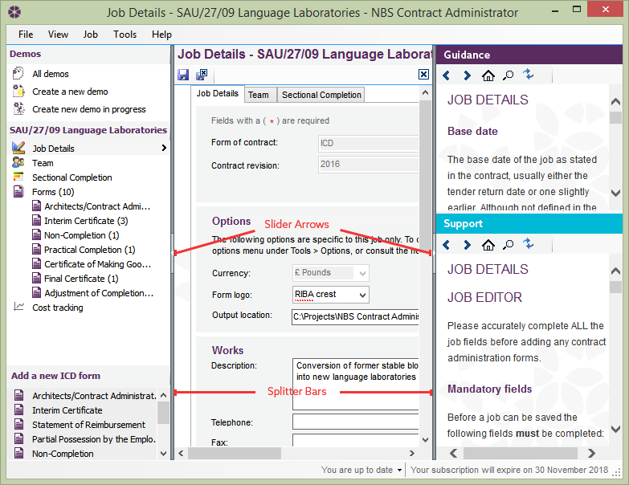
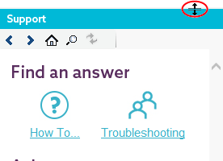
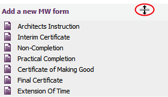

and drag it either left or right to alter the size of the side panels.
and drag it either left or right to alter the size of the side panels.Customising View Panels |
The user can adjust the side panels (Jobs, Job Details and Form library on the left, Guidance and Support on the right) in the software to view more of the contents in the Editor. There are two options available to enable the Editor to occupy more of the screen:
and drag it either left or right to alter the size of the side panels.
The user can adjust the height of each panel to view how much information they require (e.g. the user may want to view more of the Guidance panel than the Support panel).


To do this, click on the horizontal splitter bars (the mouse pointer icon will change when the user hovers over the splitter bar) and drag the splitter bar up or down to achieve the desired layout.
See Also:
Guidance Panel